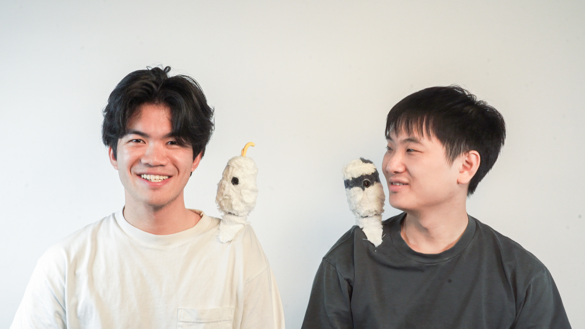

Stochastic Parrot
A Candid AI Cohabitant. 2024.

AI assistants today are often built to feel subservient. People model them as obedient, anthropomorphic, and always waiting for a command. The Stochastic Parrot takes a different stance. Instead of acting like a miniature human or a digital butler, it's designed as a non-human character: a physical, fuzzy, opinionated parrot with its own personality and agenda.
By giving the AI its own character and freeing it from the role of "assistant", the parrot becomes an agentic presence in your everyday life. We define it as an AI Cohabitant. It can wander with you on your shoulder, collect context from the world around you, and interject on its own terms. The relationship becomes less like user-to-tool and more like living with a quirky roommate or a house pet that shares your space, notices things, and occasionally has something to say.
This framing unlocks new forms of interaction. The parrot can whisper context back to you during conversations, nudge you about your goals, or react to the environment as it unfolds. Multiple parrots can even banter with each other, creating emergent "parrot-to-parrot" social dynamics. By treating the AI not as a servant but as a cohabitant with character, the Stochastic Parrot opens the door to richer, more spontaneous, and more emotionally textured ways of living with intelligent machines. The Stochastic Parrot is here to live alongside you.
By giving the AI its own character and freeing it from the role of "assistant", the parrot becomes an agentic presence in your everyday life. We define it as an AI Cohabitant. It can wander with you on your shoulder, collect context from the world around you, and interject on its own terms. The relationship becomes less like user-to-tool and more like living with a quirky roommate or a house pet that shares your space, notices things, and occasionally has something to say.
This framing unlocks new forms of interaction. The parrot can whisper context back to you during conversations, nudge you about your goals, or react to the environment as it unfolds. Multiple parrots can even banter with each other, creating emergent "parrot-to-parrot" social dynamics. By treating the AI not as a servant but as a cohabitant with character, the Stochastic Parrot opens the door to richer, more spontaneous, and more emotionally textured ways of living with intelligent machines. The Stochastic Parrot is here to live alongside you.